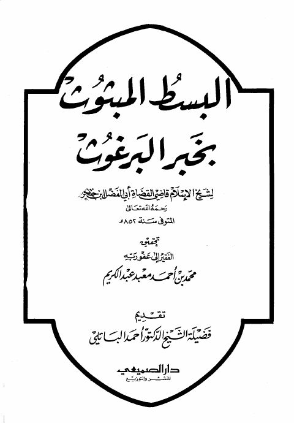

البسط المبثوث بخبر البرغوث
Authors: أحمد بن علي بن حجر العسقلاني
Editors: محمد بن أحمد معبد عبد الكريم ، أحمد الباتلي
Publishers: دار الصميعي للنشر والتوزيع
Download Downloads need an internet connection.
- Published
- 1415هـ 1995م
- Country
- الرياض، السعودية
- Edition
- 1
- Volumes
- 1
- Pages
- 72
- Type
- كتاب
- Category
- الحديث وعلومه
- Subcategory
- بحوث حديثية
Description
**▫️ العنوان: البسط المبثوث بخبر البرغوث** ▪️ المؤلف: #أحمد_بن_علي_بن_حجر_العسقلاني ▫️ المحقق: #محمد_بن_أحمد_معبد_عبد_الكريم • #أحمد_الباتلي ▪️ الناشر: #دار_الصميعي ▫️ تاريخ النشر: 1415هـ 1995م ▪️ بلد النشر: الرياض، #السعودية ▫️ الطبعة: 1 ▪️ عدد الأجزاء: 1 ▫️ الصفحات: 72 ▪️ نوع الوعاء: #كتاب ▫️ التصنيف الرئيسي: #الحديث_وعلومه ▪️ التصنيف الفرعي: #بحوث_حديثية ۪